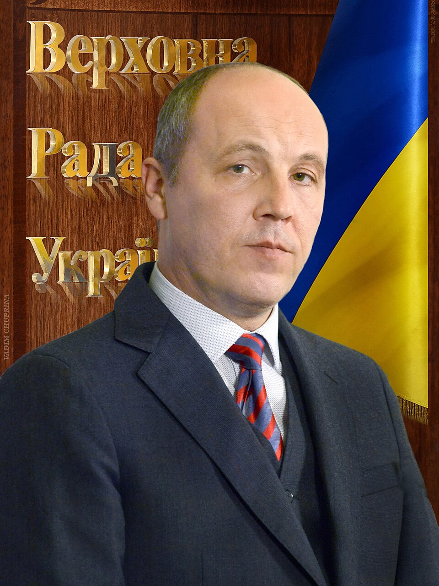

Kyiv street to be named for former Ukrainian parliament chairman Andriy Parubiy, killed in Lviv
2026, January 5

Kyiv street to be named for former Ukrainian parliament chairman Andriy Parubiy, killed in Lviv
2026, January 5
Ukraine
A street in Kyiv will be named after the former Speaker of the Parliament Andriy Parubiy, killed in Lviv. The initiative to commemorate the prominent Ukrainian politician was supported by 57% of participants in a public poll on "Kyiv Digital" application. On January 1, Maryna Poroshenko, the leader of “European Solidarity”, announced the street name in the Kyiv City Council and on Facebook. As the result, a section along Mariinsky Park – from Hrushevskoho Street to Parkova Road – will bear the politician's name, named "Andrei Parubia Street".In December, former President of Ukraine and head of the European Solidarity party Petro Poroshenko asked the residents of Kyiv to support the vote to name the street after Parubiy. The street had no name at the time of the proposal.
"This place is significant for our team and for Andriy himself — a significant part of his journey is connected with it," Poroshenko said.
On October 1, 2025, President Volodymyr Zelenskyy signed a decree awarding Parubiy the title of Hero of Ukraine. A petition to award the title of Hero of Ukraine to Parubiy was registered on the presidential website on September 2, gaining 25,000 signatures, which was necessary for the proposal to be considered by President. The Verkhovna Rada, the Ukrainian parliament, also supported the request.
Parubiy was among several people who were conferred Heroes of Ukraine. Others were writer Volodymyr Vakulenko and student and footballer Stepan Chubenko. Poroshenko lauded the decision, recalling that "Parubiy dedicated his entire life to serving Ukraine".
Andriy Parubiy, 54, who served as the Chairman of Verkhovna Rada from 14 April 2016 to 29 August 2019, was shot and killed in Lviv on 30 August 2025. He died at the scene from injuries. The killing happened amid the Russian invasion, which started in 2022.
The shooter managed to escape. Later, Ukrainian authorities detained a suspect, and allege there is a Russian link to the killing.
Parubiy was an active participant of Euromaidan. He also served as Secretary of the National Security and Defence Council of Ukraine from February till August 2014.
The suspected killer of Ukrainian lawmaker Andriy Parubiy admitted on 2 September his role in the killing. He claimed to have comitted the crime in an act of "revenge" against the country’s authorities. He denied having worked with Russian special services.